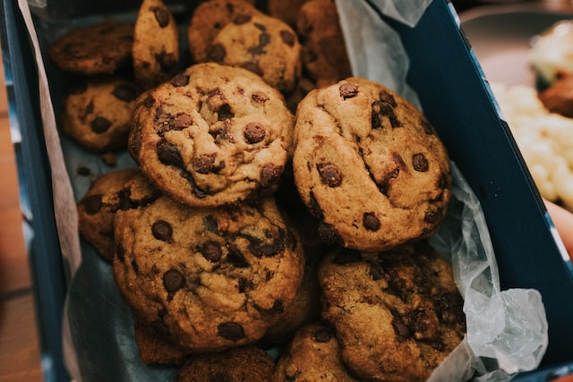

The Best Chocolate Chip Cookies

Learn how to make the best chocolate chip cookies.
Ingredients
- 1 cup of softened butter
-
3/4 cup of white sugar
- 3/4 cup of packed brown sugar
- 2 eggs
- 2 teaspoons of vanilla extract
- 1 teaspoon of baking soda
- 2 teaspoons of hot water
- 1/2 teaspoon of salt
- 3 cups of all-purpose flour
- 2 cups semisweet chocolate chips
Instructions
- Gather ingredients.
- Preheat oven to 350 degrees F.
-
Beat butter, white and brown sugar together with an electric mixer until
smooth.
- Beat in the eggs one at a time, then stir in vanilla.
- Dissolve baking soda in hot water. Add to batter alon with salt.
- Stir in flour and chocolate chips.
-
Drop spoonfuls of dough 2 inches apart onto a baking sheet lined with
parchment paper
-
Bake in preheated oven until the edges are nicely browned, approximately
10 minutes
- After removing from the oven put cookies on a wire rack to cool.
- Enjoy!